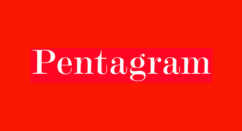
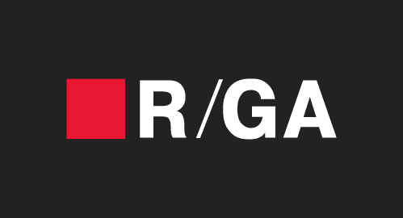
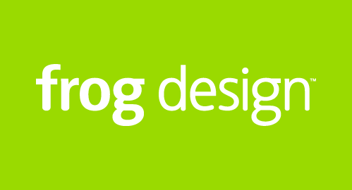
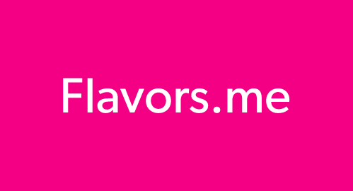

I'm Jack. I freakin love my family and building stuff on the web.
(Don't let the picture fool you...we're crazy.)
Where I've been

Designer
NY Jets
Gallup
Saks Fifth Avenue

Designer
Splenda
Band-Aid
Johnson and Johnson

Designer
General Electric
Microsoft
Sprint
Design Director
Vimeo Plus
Vimeo Groups
Vimeo HD

Co-Founder
Flavors
Goodsie
Co-Founder
Flavors
Goodsie
Goodsie
The most simple, stylish and affordable way to create an online store without any code.
“Bringing e-commerce to the masses, Goodsie makes it quick and easy for anyone to set up shop online through the creation of professional, custom websites where they can sell their goods and services.”
“Genius Idea: Making a point and click product look like it was made by a designer. Goodsie has managed to differentiate on three points: ease of use, design and price.”
“Goodsie makes setting up a gorgeous online shop dead simple... The whole process is very intuitive and you'll be able to get your products listed very quickly.”
“Why Goodsie? A Goodsie site feels more personal than opening up a shop on Etsy. It's beautifully designed and the easy to use interface includes layouts options, background uploads, custom color palettes, pages and a range of fonts.”
“Helping small businesses make the jump to online sales is becoming a big business opportunity, especially with the added boost coming from sales via smartphones and tablets.”
"If you're looking to set up an elegant portal for your online identity that brings together social networks and other aspects of your online presence, Flavors.me is as simple and easy to use as it gets."
"Flavors.me, the dead-simple service for building your own personal profile page, is launching a major redesign on Tuesday, with features that position it to take on the blogging juggernaut that is the Tumblr pageview machine."
"On Tuesday, the service is introducing a new design and a bevy of new features that will help transform the service from a personal Web placeholder into a kind of social network."